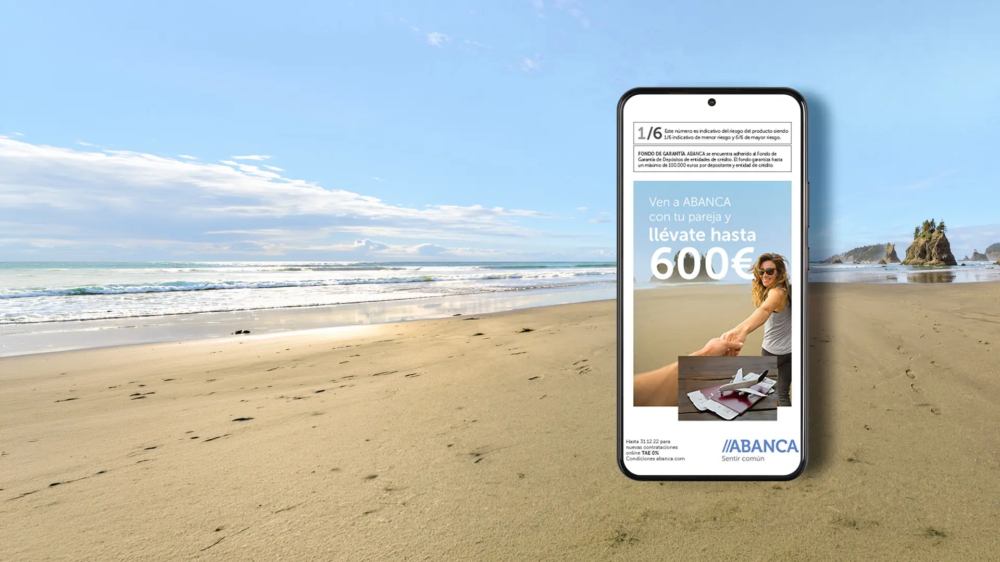
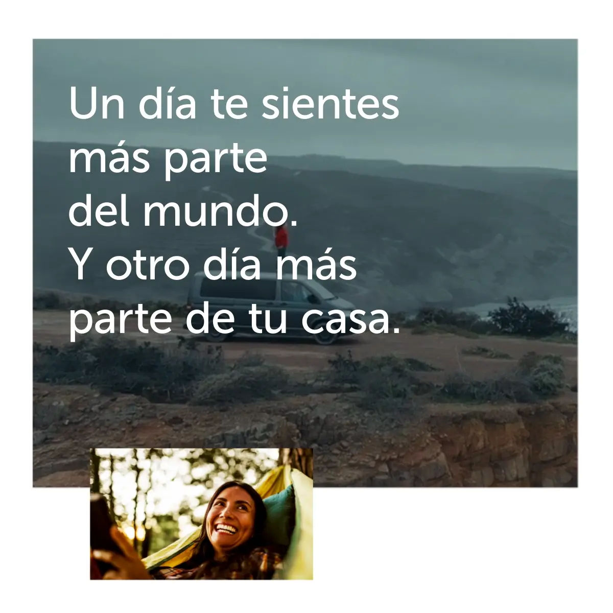
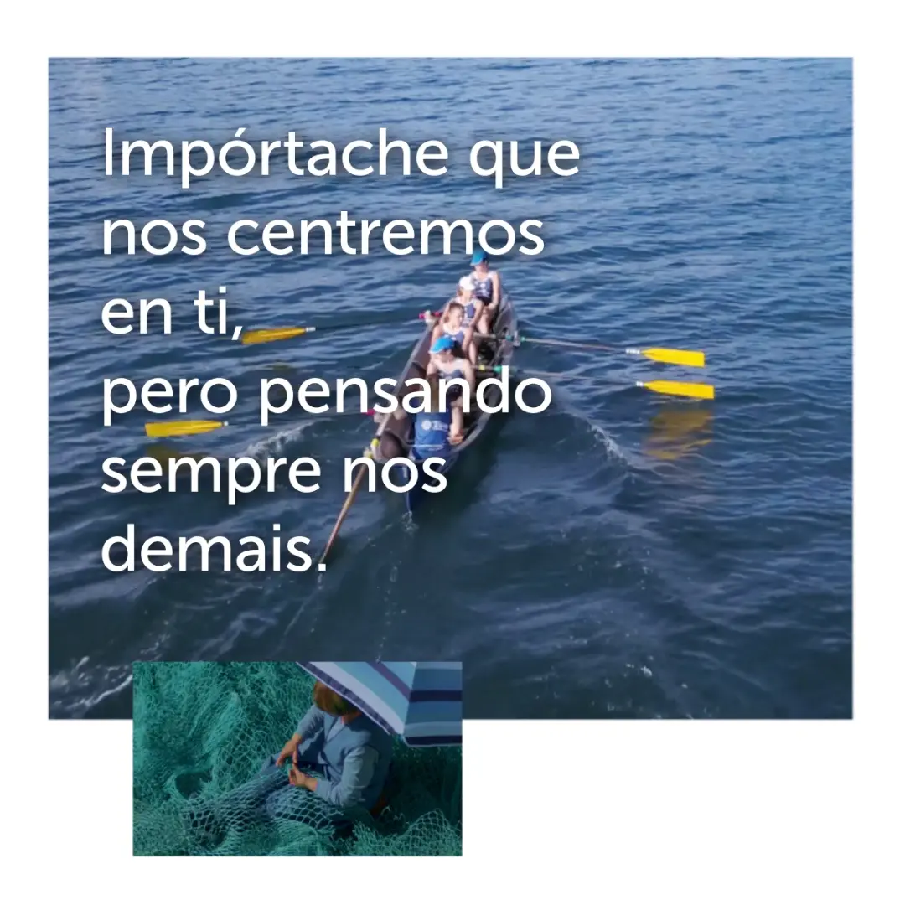
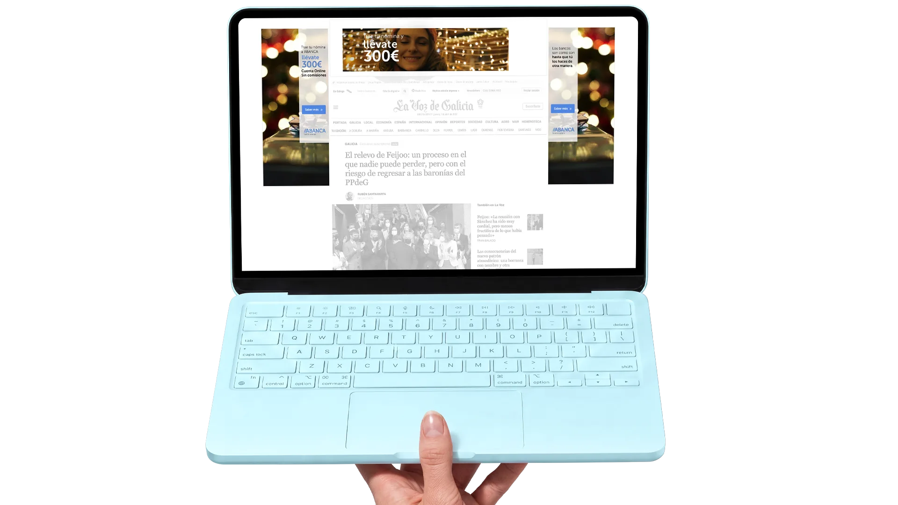

Brand Days turns payroll and travel offers into social pieces. Short message, real photography, clear call to action.

Abanca — illustration and acquisition campaigns
Xacobeo 21:22 illustrated series · Brand Days campaign for social media · display banners · art direction
Abanca — Brand Days campaign and Xacobeo illustrations
The brief — We've handled a wide range of work for Abanca: social media, banners, emails, ad pieces, spot editing and small promo websites.
My role — Social media and banner design, illustration and art direction.
What I did —
- Brand Days campaign ("bring your payroll and get a gift"). Once the main design was set, I adapted it to every market and format, sourcing and editing photos so each piece told Abanca's story.
- Xacobeo 21:22 illustration series. Illustrated the festivities of the Jacobean Year, like the Feira do Bonito, San Xoán and the seafood festival, each adapted to the brand's formats. A lot of creative freedom — one of my favourite projects.
- Also. Spot editing, banners, emails, small promo websites.
How it worked — Idea from the creative team → I design the main banner → once approved, I pick the supporting images → I build the rest of the format adaptations.
Result — A long relationship covering everything from social to ad campaigns, with room for original illustration.




Full set of Brand Days social pieces — one format per placement (feed, story, banner), same art direction.

Display banner for the same offer, shown on a news site homepage — same photography and typography as the social pieces.

Xacobeo 21:22 illustrated series for San Xoán 2022 — illustration and design for each piece.